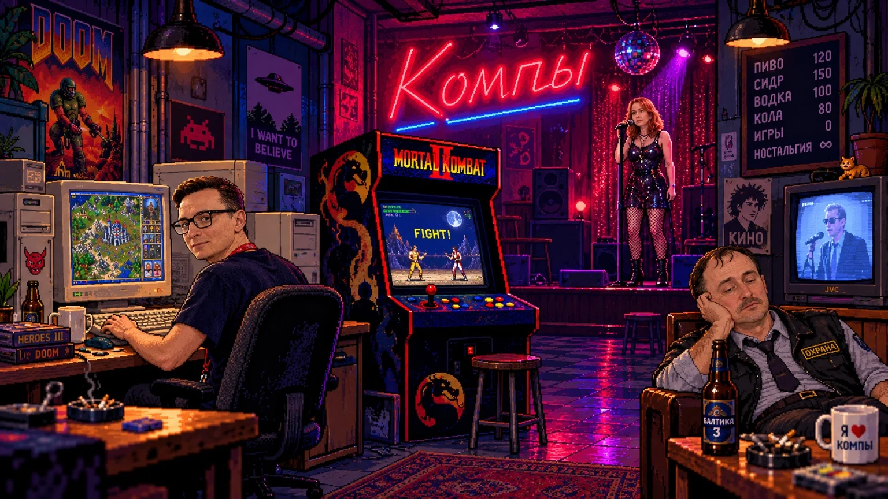

SCENE 01 / THE DOORPIXEL ART BACKDROP
FACE CONTROL / LEVEL 1
ВОПРОС 01 / 09ВЕРНО: 0
IDLE LOOP / SECURITY SCANTHE PIXEL PLEASURES XXX
ЖДЁМ ОТВЕТ
▣ АРТУРSECURITY
[ ПРОВЕРКА ДОКУМЕНТОВ ]
КЛАВИШИ: 1–4 — ОТВЕТ, ENTER — ДАЛЬШЕ
★
PIXEL SECURITY FEED · SAME CLUB / NEW ATTITUDEVERIFICATION COMPLETE
0/9
▣ LOCATION 02 / КОМПЫ
ДОБРО ПОЖАЛОВАТЬ В «КОМПЫ»
Здесь не спрашивают паспорт. Здесь спрашивают, помнишь ли ты времена без стриминга. Выбирай, к кому пристать.

▣ КОМПЫ / КВИЗ
ВОПРОС 01 / 10ВЕРНО: 0
КОМПЬЮТЕРЩИК • ЖДЁТ ОТВЕТ
[ ТЕМАТИЧЕСКИЙ КВИЗ ]
1–4 — ОТВЕТ · ENTER — ДАЛЬШЕ
QUIZ COMPLETE
ИТОГ РАУНДА
0/10
▣ LOCATION 03 / АРКАДНЫЙ АВТОМАТ
The Adventures of Тимур!
3 УРОВНЯ · 3 ЖИЗНИ · ТАП ДЛЯ УДАРА · ЗАЖМИ И ВЕДИ ПАЛЕЦ ДЛЯ ХОДЬБЫ